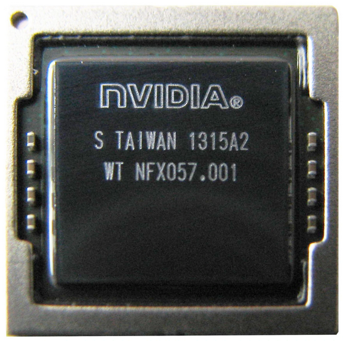

Nvidia Tegra 4 (tegra114)
Jump to navigation
Jump to search
|
 NVIDIA T114 chip | |
| Manufacturer | Nvidia |
|---|---|
| Name | Tegra 4 |
| Architecture | armv7 |
| CPU | 4x 1.8-1.9 GHz Cortex-A15 |
| GPU | Nvidia ULP Geforce 72 cores |
| Year | 2013 |
| Process | 28nm |
| Mainline | yes |
| Community Page | https://github.com/grate-driver |
| Components | |
| CPU |
Partial
|
| UART |
Works
|
| Storage |
Works
|
| USB |
Partial
|
| Display |
Works
|
| GPU |
Partial
|
| Pinctrl |
Works
|
| I²C |
Works
|
| SPI | |
| Audio |
Works
|
| Video |
Partial
|
| Thermal |
Works
|
| WiFi |
Unavailable
|
| Bluetooth |
Unavailable
|
| Modem |
Unavailable
|
| GPS |
Unavailable
|
| Camera | |
| Suspend |
Works
|
{kind=link}
Devices with a Nvidia Tegra 4 Chipset
| Device | Mainline |
|---|---|
| ASUS Transformer Pad (TF701T) | Y |
| HP Slate 21 | |
| Microsoft Surface 2 | Y |
| NVIDIA Tegra Note 7 | Y |
List of missing/malfunctioning drivers
- DSI driver and MIPI calibration (malfunctioning on TF701T)
- HDMI driver (no evidence that it can work on T114)
- ACTMON driver (is present but has dependency on missing driver)
- SPI driver (fails to detect some spi devices)
- EMC/external-memory-controller driver (missing, required by actmon)
- HDA driver (T30 has T114 support but it fails to work)
- XUSB and XUSB-padctl (missing, T124 may be used as reference)
- CEC driver (present but not tested since HDMI does not work)
- SOCTHERM driver and thermal zones (missing, T124 may be used as reference)
- DFLL driver (missing, T124 may be used as reference)
- cortex-a15-pmu (check if it is used by t114)
- powergates and power-domains (check if it is needed by t114)
CPU
DVFS and thermal zones are not supported, everything else works.
USB
Tegra114 supports XUSB (XHCI), but kernel currently does not support XUSB, so USB can work only in EHCI mode.
GPU & Video
See Nvidia_Tegra_2_(tegra20)#Graphics.
See also
- Tegra 4 is very similiar to Nvidia_Tegra_2_(tegra20) and Nvidia_Tegra_3_(tegra30)